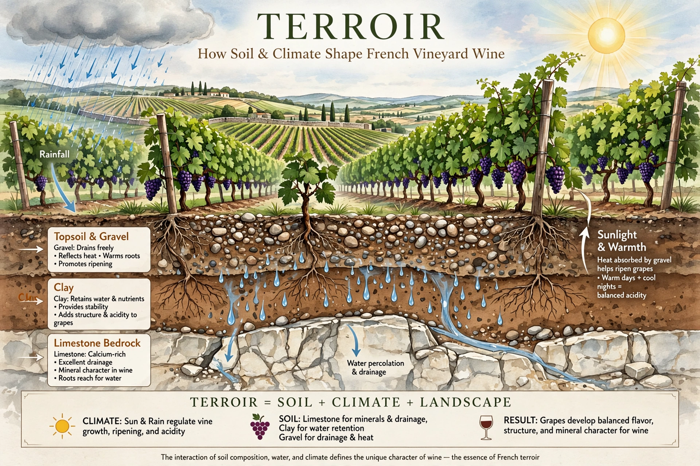

Terroir (from French terre, 'land') is the set of environmental factors that affect a crop's phenotype, including unique environmental contexts, farming practices and growth habitat. Collectively these characteristics are said to give a sense of place to wines, cheeses, coffee, tea and other products.

In wine, terroir encompasses climate, soil type, topography, geology, altitude, aspect and local microbiota. It underpins the French appellation d'origine contrôlée system: grapes grown in a particular place are held to produce a distinctive wine that could not be replicated elsewhere.
The concept is applied to cheese, coffee, chocolate, maple syrup, tea and artisanal foods, and is closely linked to geographical indications protecting regional products.
Scientists debate how much of perceived terroir derives from soil chemistry versus climate, microbiology and winemaking choices. Modern studies examine soil microbes, minerality claims and sensory analysis.